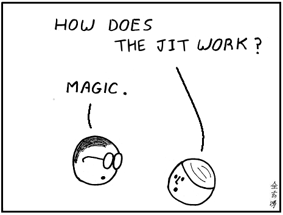

Optimizing Python programs, PyPy to rescue
6. Oct. 2016, Cape Town
Richard Plangger
More "general" PyPy talk
Goals:
- An approach to optimize Python programs
- Examples
- How not to start optimizing
- What is PyPy up to now?
PyPy is a ...
... fast virtual machine for Python
developed by researchers, freelancers and many contributors.
$ python yourprogram.py
$ pypy yourprogram.py
PyPy is not just that
Experiment with new ideas
- Python written in Python
- RPython
- JIT compiler
- VMProf
- PyPy STM
- ...
About me
Working on PyPy (+1,5y)
Master thesis → GSoC 2015 → PyPy
living and working in Austria
Speedy Python programs?
When is your Python program fast enough?
When it gets a speeding ticket because it is too fast?
or when PyPy's benchmark suite reaches 10x faster on average?
Neither
Run your program an measure your criteria
For example?
- CPU time
- Peak Heap Memory
- Requests per second
- Latency
- ...
Dissatisfaction with one criteria of your program!
Some theory ...
Complexity
Big-O-Notation
Classify e.g. a function and it's processing time
Increase input size to the function
a = 3# O(1)[x+1 for x in range(n)]# O(n)[[x+y for x in range(n)] \# O(n*m) == O(n) if n > m
for y in range(m)]
O(n**2) vs O(n log n)
Complexity
Yields the most gain, independent from the language
E.g. prefer O(n) over O(n**2)
Only optimize a routine if ...
you know that the complexity cannot be stripped down
Let's start from the beginning
with a small example
Reading log files!
JITLOG (facility to observe PyPy's JIT internals)
- Written in Python
- Moved to vmprof.com
- Log files can easily take up to 40MB uncompressed
- Takes ~10 seconds to parse with CPython
- Complexity is linear to input size of the log file
Thanks to Python
+ Little development time
+ Easy to test
- Takes too long to parse
- Parsing is done each request
Our criteria: CPU time to long + requests per second
(Many objects are allocated)
Suggestion
Caching
Reduce CPU time
Let's have both
Caching - Easily done with your favourite caching framework
Reduce CPU time - PyPy seems to be good at that?
Let's run it...
$ cpython2.7 parse.py 40mb.log
~ 10 seconds
$ pypy2 parse.py 40mb.log
~ 2 seconds
Caching
Requests really feel instant after the log has been loaded once
Precache
The lazy approach of optimizing Python
VMProf
$ pip install vmprof
$ python -m vmprof --web parse.py
Introducing PyPy's JIT
Hot spots
Loops / Repeat construct!
What kind program can you build without loops?
A simplified view
- Start interpretation
- Loops trigger recording
- Optimization stage
- Machine code generation
Beyond the scope of loops
Guards ensure correctness
Frequent guard failure triggers recording
Perception
 http://abstrusegoose.com/secretarchives/under-the-hood - CC BY-NC 3.0 USJitViewer
Tool to inspect PyPy internals
Helps you to learn and understand PyPy
Provided at vmprof.com
Properties & Tricks
- Type specialization
- Object unboxing
- GC scheme
- Dicts
- Dynamic class creation (Instance maps)
- Function calls (+ Inlining)
Another real world example
Magnetic
Marketing tech company
Switched to PyPy 3 years ago
Q: What does your service do?
A: ... allow generally large companies to send targeted marketing (e.g. serve ads) to people based on data we have learned
Q: PyPy, where was it most helpful?
A: ... ~30% speedups immediately from switching to PyPy ...
Q: PyPy issues?
A: ... we had to solve for rolling deploys ... but that's ok, that's fairly easy ...
Q: Value to your company?
A: Latency speedup was somewhere aroudn 10% ...
But that number is deceiving
It's very valuable for us obviously
But it's only 10%, because even this app that I'm talking about, which is fairly high volume (500,000 QPS), is a WSGI app
So it spends lots of time blocking
timeit
why not use perf?
Try timeit on PyPy
Python 3.5
Progressed quite a bit
async io
Many more small details (sprint?)
C-Extentions
NumPy on top of the emulated layer
Boils down to managing PyPy & CPython objects
Closing example
how to move from cpu limited to network limited
linkQuestions?
morepypy.blogspot.comsoftware@vimloc.systems
Join on IRC #pypy